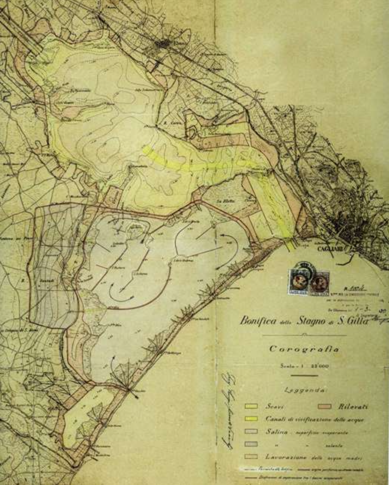
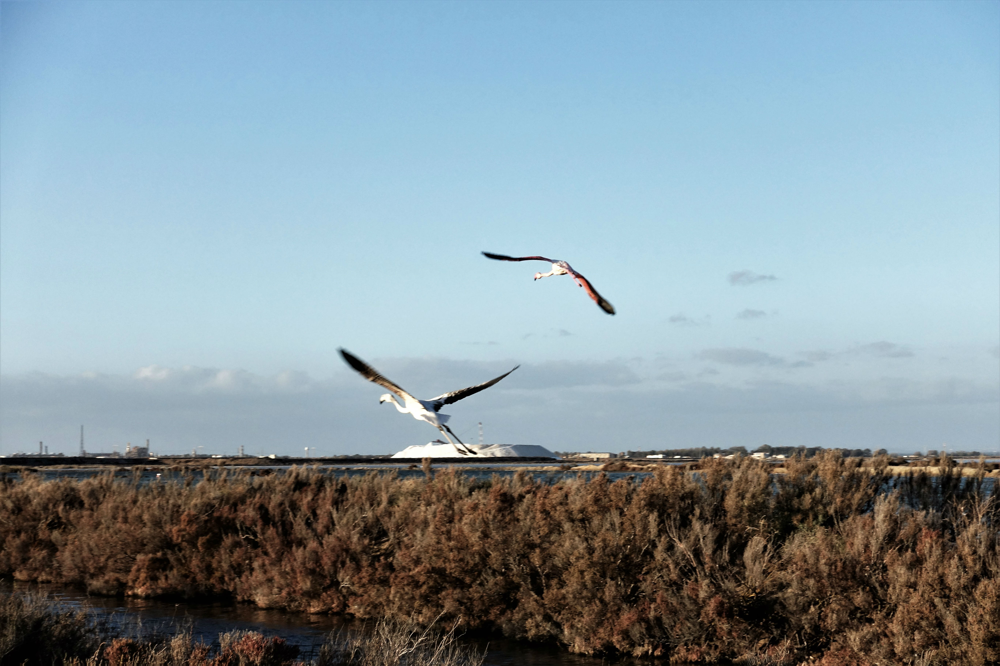
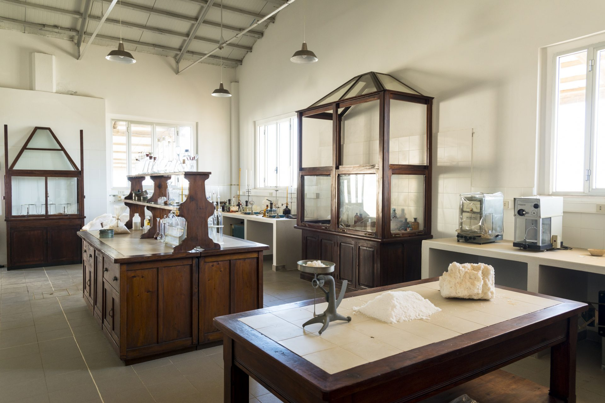
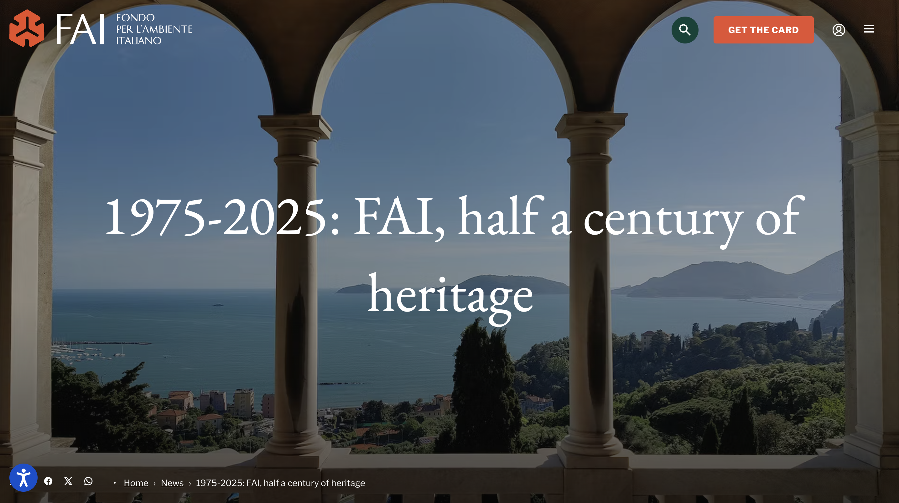
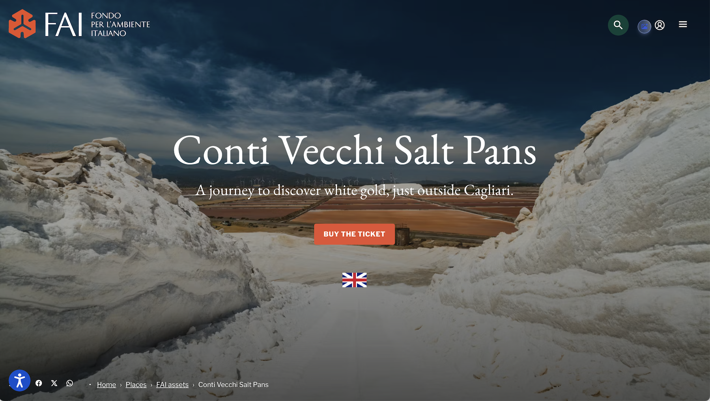
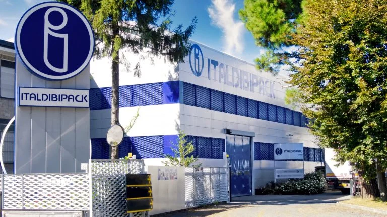
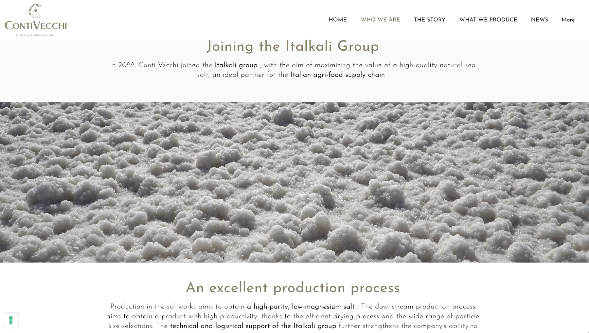

Luigi Conti Vecchi & the Land Reclamation
In the early twentieth century, the marshlands south of Cagliari were considered uninhabitable. They were waterlogged, infested with malaria-carrying mosquitos, and economically marginal. Engineer Luigi Conti Vecchi saw something else: a coast with the salinity, temperature, and wind conditions to support large-scale solar salt production (MedSea Foundation, 2020; Sardinia12, 2017.). He proposed a project to drain the lagoon margins, modify the banks, and install a circulating canal system to move brine through graduated evaporation stages. Saltworks emerged as part of this broader territorial transformation, alongside land reclamation efforts, the construction of hydraulic infrastructure, and the building of an industrial village for all workers and their families. The once malarial wetland was reconfigured into a productive landscape, one that synchronized ecological processes with industrial dynamics. This making of an engineered coastline became a place where environment, labor, and infrastructure were interwoven to produce not only salt but a landscape whose production would later be reinterpreted as heritage.
A Territory Redesigned
The Santa Gilla lagoon was reorganised into a sequence of basins, levees, and channels, covering approximately 1,700 hectares (IDESE Cultura, n.d.). A refinery line was planned to connect directly to the Port of Cagliari. Within this engineering system, seawater was guided through a calibrated network of evaporation ponds, moving from larger and deeper basins into smaller crystallization pools, where salt would be harvested. The entire saltworks functioned as a controlled gradient of salinity, shaped by sun, wind, and the time of water circulation — a highly engineered terrain, where shifts in elevation and flow could determine the production cycle. Besides the hydraulic works, there were supporting infrastructures such as pumping stations, roads, and storage buildings to facilitate the movement of materials and workers across the site. Saline Conti Vecchi developed into a self-contained system, where industrial processes, ecological conditions, and everyday life were interwoven.
Building from Scratch
Everything at Conti Vecchi was made on site. Bricks were formed from clay mixed with straw and dried in the sun; the workers' village at Macchiareddu was built from reclaimed ground (MedSea Foundation, 2020).. Housing for families, a school, a church, a pharmacy, a carpentry shop, and a chemical laboratory were all constructed as part of a single corporate vision. The company built a self-sufficient settlement because there was nothing else here (Sardinia12, 2017; Follett, 2016).
 Life of the Saline
Community Gathering at Macchiareddu House in 1930
Life of the Saline
Community Gathering at Macchiareddu House in 1930
Life and Labor of the Saline
At its peak, around 300 permanent workers lived in the Macchiareddu Village. During the harvest season between September to November, the number of workers rose to approximately 1,500 (MedSea Foundation, 2020).. The work was physical and seasonal: "sun workers" and "shadow workers" calibrated their labour to the rhythms of evaporation (Neo s.r.l, 2017).. What the archival photographs illustrate is the body as instrument, with the rake held at a precise angle, the wheelbarrow pushed along levee paths worn smooth by repetition across decades (MedSea Foundation,2020; Follett, 2016).
The Village as Social World
The company offered wage salaries that were considered exceptional for the time and extended the right to education to workers' children (MedSea Foundation, 2020).. It built an infirmary, a cafeteria, and recreational spaces, organizing the services around the rhythms of the saltworks. Women were excluded from manual labor but directed toward vocational training. The company designed the houses workers lived in, regulated their access to services, and shaped how time was spent. This was paternalism embedded throughout the landscape, clearly showing that production did not end at the basin's edge but extended into the domestic sphere (Follett, 2016)..

Man-made Wetland © Saline Conti VecchiUninvited Residents
The flamingos were not planned for, as Saline Conti Vecchi was established in the 1920s to produce salt, not to serve as a bird sanctuary. Greater flamingos began colonizing the site in the 1990s and by the 2000s Saline Conti Vecchi had become an important flamingo migration corridor in the Mediterranean, as one of Sardinia's most significant wetland reserves (ENICBCMED, 2020; MedSea Foundation, 2020).. The infrastructure built to serve industrial salt production happened to replicate the shallow-brine conditions flamingos need for feeding and nesting, especially during the evaporation season (ENICBCMED, 2020).
Infrastructure as Habitat
The ecological value of the site depends on the continued operation of the industrial system itself (ENICBCMED,2020).. The electric pumps that move water through the basins to produce salt also regulate salinity levels across the pans. When any of that process stops, the system unravels. Brine shrimp populations decline and with them the birds that depend on this food chain (Klingerman, 2019). The thriving wetland is sustained through constant intervention. In other words, the wetland is not separate from the infrastructure; it is produced by it. Its biodiversity exists through the very process of extraction.
 Death of the Saline Village
Photo:
Death of the Saline Village
Photo:
Decline, War, and Mismanagement
The Second World War disrupted the salt pans materially and socially. Production declined and parts of the infrastructure were damaged. There were partial recoveries in the post-war years but the site never fully returned to the social world of its original settlement (MedSea Foundation, 2020; Sardinia12, 2017.). There were big shifts in ownership and management between hands, and with that investment slowed. The company village declined as workers moved elsewhere for housing and daily life (MedSea Foundation,2020.; Sardinia12, 2017.). The village thinned out and eventually slipped into disuse and disrepair (Follett, 2016).
The Empty Village
The transformation of Macchiareddu unfolded as workers moved elsewhere gradually, leaving the houses and the village that had once thrived. The area around the saline industrialized in a different logic as ENI, an energy giant with significant public stakes expanded petrochemical operations across the Assemini-Macchiareddu corridor, reshaping the surrounding area into an industrial zone. The original workers' settlement remained in place without being repurposed or demolished (Unione Sarda, 2022). The village became obsolete, abandoned by the logic that had created it.

Rebirth of the Saline Photo: Local Digital Projects / FAI



ENI Takes Ownership
Beginning from the mid-twentieth century, Saline Conti Vecchi gradually got consolidated into ENI (Ente Nazionale Idrocarburi), Italy's state-owned energy company, operating through its subsidiary Ing. Luigi Conti Vecchi S.p.A. (ENI Rewind, 2023.). ENI absorbed the chemical and salt related operations and from this period onwards, the salt pans became effectively part of Eni's industrial network. The company has sought to reposition itself as a leader in environemntal remediation and sustainability, framing projects like Conti Vecchi as proof of its green transition actions. Through its subsidiary Eni Rewind, Conti Vecchi is presented as a model where industry, ecology, and heritage coexist. This narrative has been challenged as it sits alongside a different reality - while having increasingly visibl renewable initiatives, only a small share of Eni's overall portfolio is dedicated to renewable energy, while the majority of its operations and revenues are tied to fossil fuel extraction and processing. Saline Conti Vecchi with its flamingos and centenary history, is gramed as a story of harmony between industry and nature (ENI, 2024), is leveraged as a visible interface through which Eni performs sustainability.
ENI & FAI Partnership
In 2016, Eni formalized a strategic partnership with Fondo Ambiente Italiano (FAI), Italy's national heritage trust (Dire.it, 2017; Serendipsite, 2022). Through this collaboration, FAI restored key buildings — the foundry, the management offices, the chemical laboratory, and the director's residence — while opening the site to guided tours and framing it as "a unique cultural-preservative experience, combining industrial activity with the historical and naturalistic value of an operational site" (Nocilla, 2025). Notably, Saline Conti Vecchi is one of only two privately owned sites that FAI manages, marking a departure from its usual portfolio of public or donated heritage assets. Heritage, in this context, becomes the primary interface through which Eni presents its presence to the public. This partnership, however, has not been without controversy. Critics have questioned the alignment between a national heritage institution and a major energy company whose core operations are largely tied to fossil fuel production, raising concerns about corporate image-making. At Conti Vecchi, restoration and narrative curation unfold alongside ongoing industrial activity, blurring the boundaries between preservation, promotion, and branding. If both Eni and FAI operate within structures closely tied to the Italian state — one as a state-controlled energy company, the other as a nationally endorsed cultural institution — then what does their collaboration reveal about how heritage is mobilized, and whose interests it ultimately serves?
Leveraging the Green Image
In particular, the ENI–FAI partnership has drawn sustained criticism as a form of greenwashing. Italian citizens and organizations have formally sued ENI for human rights violations and climate change impacts (Greenpeace, 2023). Italy's Supreme Court confirmed jurisdiction in a landmark climate lawsuit against the company (Andrich et al., 2025) and ENI has been accused of marketing fossil fuels as clean energy while continuing to expand extraction (Igini, 2023; Niranjan, 2025). An independent assessment of ENI's climate strategy found its commitments materially insufficient (Reclaim Finance, 2025). Heritage and flamingos did not reduce ENI's industrial footprint at Conti Vecchi; they simply reframed it.
Sold to Italkali — The 2022 Divestment
In 2022, ENI sold the industrial salt operation to Italkali (Società Italiana Sali Alcalini SpA), Italy's leading national rock salt producer and owner of the Sale di Sicilia brand (Italkali, 2025.; Unione Sarda, 2022.). Italkali's production model relies on mechanical scrapers, diesel truck fleets, and vacuum pan processes using centrifuges and industrial dryers. At current, Italkali produces 400,000 tonnes per year at Conti Vecchi (Italkali, 2025.). While the FAI heritage partnership remained with ENI, the industrial infrastructure passed to new hands.
 Preservation
Photo: Author, 2026
Preservation
Photo: Author, 2026
What Is Being Preserved?
The FAI restoration preserves the management building, the chemical laboratory, the carpentry shop, and the director's office, rooms with their original furniture dating back to the founding era (Serendipsite, 2022; Nocilla, 2025).. The museum route connects these spaces and passes through the workers' housing that have become abandoned and dilapidated. Visitors can tour the salt pans by decorative train. Fleur de sel, "cultivated" by hand under specific wind conditions, is sold in the gift shop (Sardegna Turismo,2020). The bulldozers working the main harvest basins are not part of the tour.
Whose Narratives Get to Be Preserved?
In the museum trail, it is the story of Luigi Conti Vecchi (the engineer, the founder, the corporate vision) that structures the visitor experience (Sardegna Turismo, 2020). The salt workers who ran the pans for generations, who raised families in those houses, whose seasonal knowledge kept the harvest running, are present as backdrop. Their specific histories, their collective life, their embodied expertise: these are framed as atmosphere rather than as heritage in their own right (Neo s.r.l, 2017). The question of whose narrative the site preserves is also a question of whose absence it quietly erases.